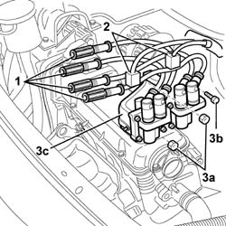

1036B32 camshaft seal support with ignition coil r + r including seal replacement
- Path
- Procedures > 10 ENGINE > 1036 TIMING SYSTEM > 1036B CAMSHAFT (1) IN CYLINDER HEAD (1) > 1036B32 camshaft seal support with ignition coil r + r including seal replacement
- Kind
- repair procedure (removal / refitting; the operation number is the code)
- Applies to
- all engines; all production periods
- Interactive page
- https://sloeber94.github.io/elrnDB-fDbl/en/#/2584212
Applies to: all engines; all production periods
 Removing
Removing
 Refitting
Refitting1048A10 air cleaner filtering element - replace
1. Disconnect the spark plug high tension leads.
2. Disconnect the coil supply electrical connectors.
 | Name | Connector |
|---|---|---|
2 | Ignition 'coil | A30 |
3. Undo the nuts (3a) and the fixing bolt (3b) and remove the support complete with coils (3c).

Applies to: all engines; all production periods
Refitting
RemovingFit the support complete with coils tightening it using the fixing nuts and bolt.
Connect the coil supply electrical connectors.
| Name | Connector |
|---|---|---|
- | Ignition 'coil | A30 |
Connect the high-tension leads to the spark plugs.